61K → 218K Daily Users
Giving a new neighbourhood map a reason to visit.

Give people a compelling reason to visit the Karrot Map tab.
Context
Karrot started as a second-hand marketplace and grew into many local services. In late 2024, its third tab became the Neighborhood Map, built on Karrot’s own map. As a late entrant to maps, it needed a clear identity. So the goal for 2025 was simple: give people a compelling reason to visit the tab.
Every project on this page served that goal, and was judged by the same two key metrics.
My role
I was the project lead (DRI) for seven months. I set the UI direction for the map and owned project management, specs and policy, work across teams, commissioning user research, design, data analysis and deciding what came next. I also managed a mid-level designer and a PM intern.
Not another navigation map
Map-first apps like Google Maps and Naver Map digitise the paper map. They answer “Where am I?” and “How do I get there?” with routes, distances and real-time transit. A late entrant would never win that game, so I looked at what Karrot Map could digitise instead.
Lively, first-hand updates from neighbours matter more than perfect accuracy.
Curated, personal picks from the people who live there.
That gave the map a clear role, set against two kinds of apps people already use.
| Map-first apps Google Maps, Naver Map | Map-enabled apps | Karrot Map | |
|---|---|---|---|
| What people want | Navigate and search for places | Discover content | Explore and search local businesses around home |
| Role of the map | The core of the service | A layer that supports content | A layer that supports content |
| Interface | The map is the main screen, rendered in real time at high precision | Reached one or two taps deep, from a place tag or search; a simple base map behind content | Its own tab; a simple base map that sits behind content |
| Typical flow | Search a place → details → route | Discover content → check where it is → share or save | Discover on the map → find something useful → follow, save or share → book, visit or buy |
| Where it ends | Arriving at a destination | Engaging, sharing or buying | Booking, visiting or buying |
| Core data | Accurate place data, then reviews | Content from users and the web, then location | Everything local, valuing what’s different over what’s exact, and neighbours’ posts; then location |
Mapping how people moved through the tab, two jobs stood out: exploring the neighbourhood, and finding something specific fast. Each got its own goal and its own experiments. A third project made both jobs start from home.
Browse what’s happening nearby, with no particular destination.
Goal: longer sessions and repeat visits.
Moves daily map active users
Look up a place or service and act on it: call, chat, book or visit.
Goal: find what you need quickly and complete the action.
Moves daily search execution users
Centre the map on where people live, so what they see is truly local.
Goal: get people to register their home.
Supports exploring around home
Give the map something to discover
Goal: a lively map that people browse for longer and come back to.
Hypothesis 1: If more Karrot content lives on the map, more people will use it.
I surfaced Karrot’s strongest location-based content first: business news and coupons, and Neighborhood Life posts with a location. Then content no ordinary map has: food alleys and themed streets that formed on their own, missing person alerts, and photo posts like snowy streets and winter snacks.
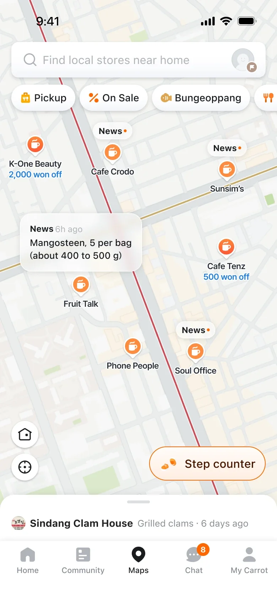
Store news and coupons.
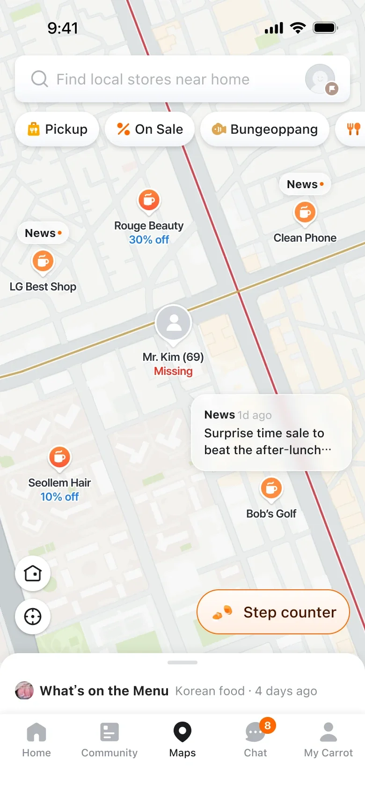
Missing persons alerts.
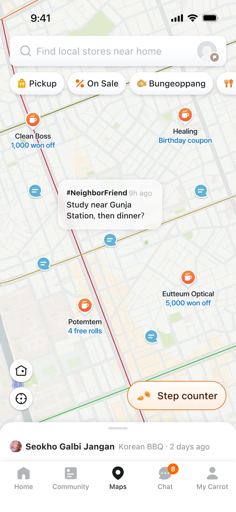
Local posts with a location.
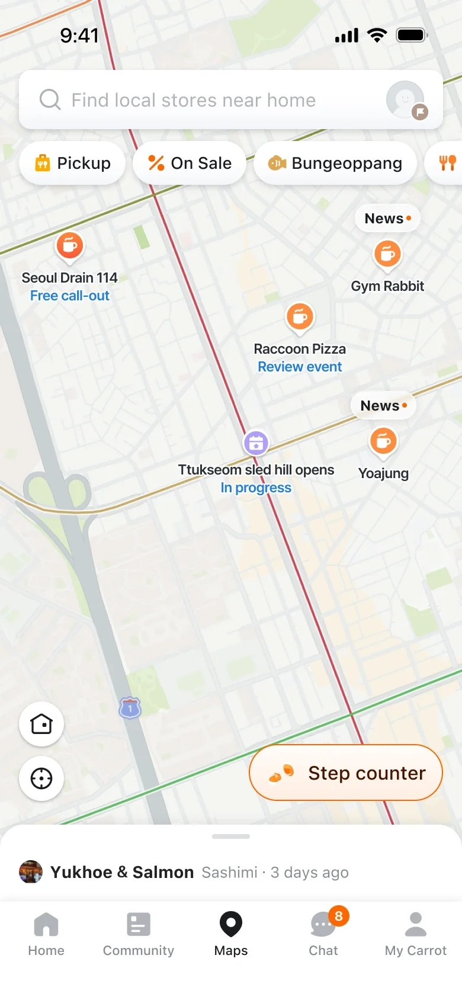
Events nearby.
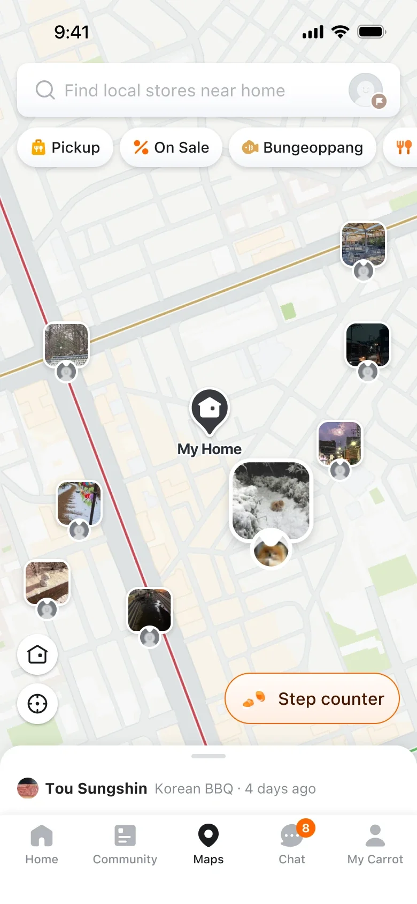
Neighbourhood photos.
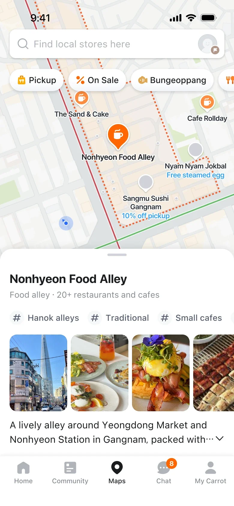
Areas of interest. Streets that formed on their own appear as areas, with the shops inside.
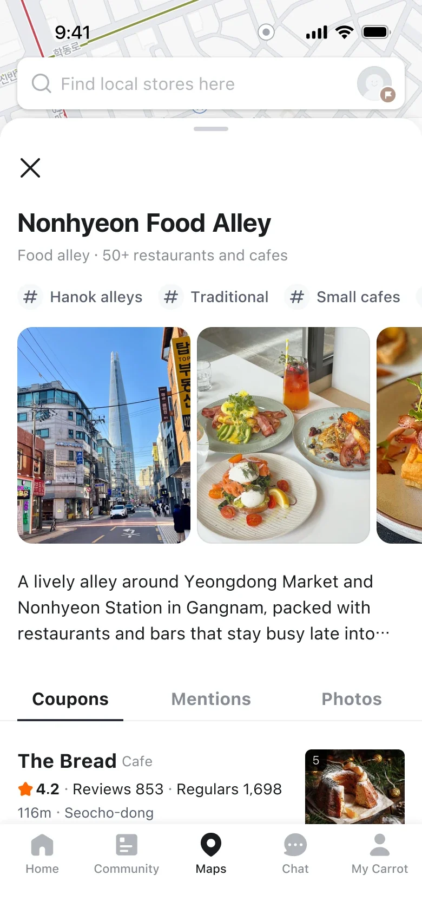
Its own page. Photos, a short story, and coupons from the shops along it.
But user interviews told a different story. People still didn’t see Karrot Map as a neighbourhood map full of things to explore. So the next test went after the structure of the home screen itself.
Hypothesis 2: If the home puts the map first, people will see it as a content map and explore more.
Experiment 1. I gave the map more of the screen and added chips at the top, so people could filter content while browsing. Search moved into the sheet below.
Control. The map shares the screen with shortcuts and deals.
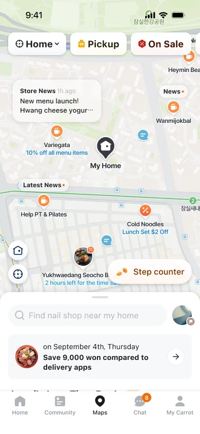
Treatment. A bigger map, filter chips on top, search in the sheet.
The hypothesis held, but searches fell by more than half. The higher click rate after searching suggested we had mostly lost low-intent searches. Still, search was a guardrail, so instead of shipping I ran a second test.
Experiment 2. Two ways to keep search where people expect it, while still giving the map more room.
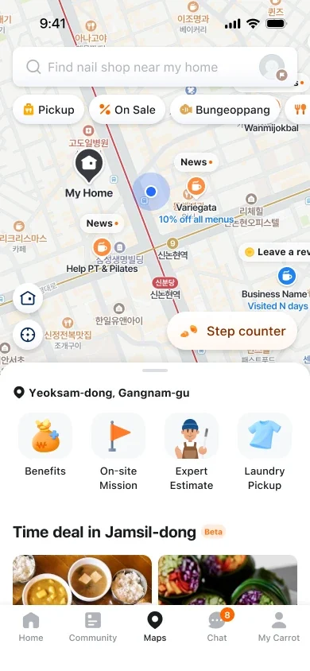
Control. The current home.
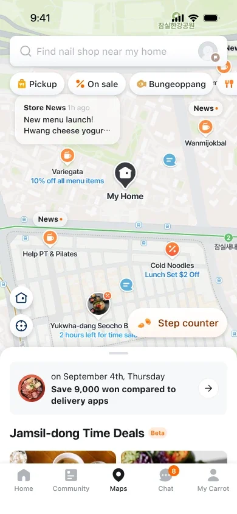
Treatment 1. Shipped The same search bar, with a bigger map.
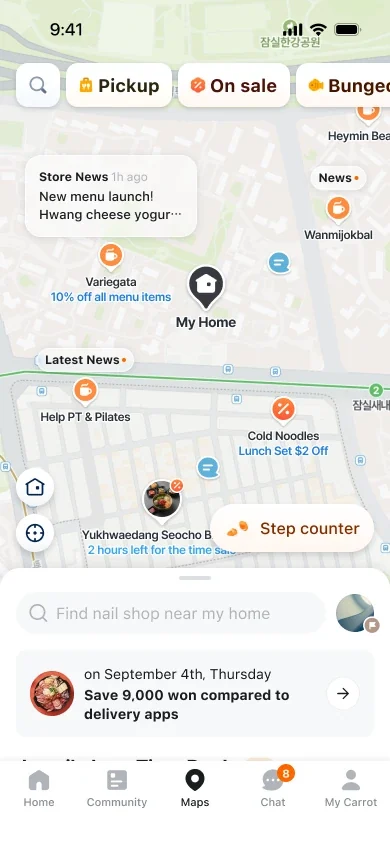
Treatment 2. Search becomes an icon in the chip row, with the field in the sheet.
| Metric | Treatment 1 | Treatment 2 |
|---|---|---|
| Search executions (guardrail) | No difference | −11% |
| Map exploration events | +29% | +33% |
Treatment 1 lifted exploration less than Experiment 1 did, but it protected the guardrail while still improving exploration. We shipped it.
Previews that answer the question
Goal: help people find what they need quickly, and act on it.
The place preview, shown when you tap a pin and in search results, was designed when the map had little data. It led with a small image and the owner’s description, and relied on action buttons to convert. By June 2025, almost nobody tapped those buttons, on the map or in search.
Hypothesis: If previews show richer information like benefits, review counts and photos, more people will open them and visit the business page.
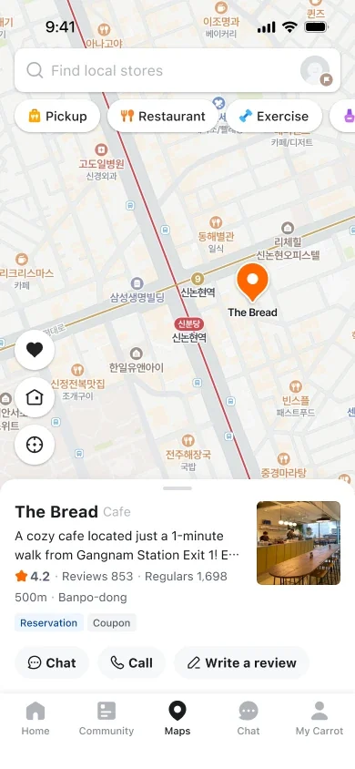
Preview. The owner’s description, one small photo, and buttons.
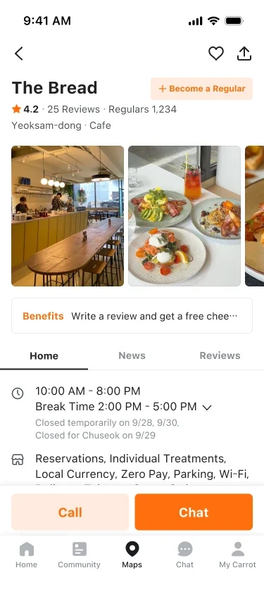
Business page. A separate screen.
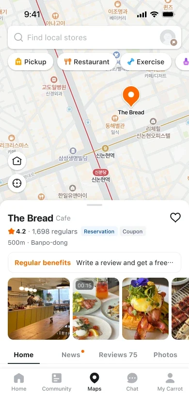
Preview. Benefits, a photo strip, and tabs that show what’s inside.
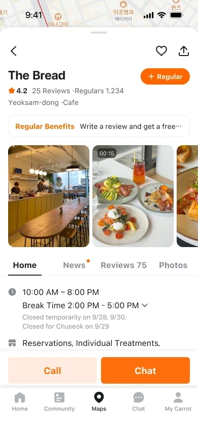
Business page. Opens as a sheet over the map.
Richer information, chosen by what each place offers. The preview shows one highlight, in a set order: regular-customer benefits, then pickup discounts, then the menu. Up to five photos follow, with more a swipe away.
Benefits first. A reward for regulars, when a place offers one.
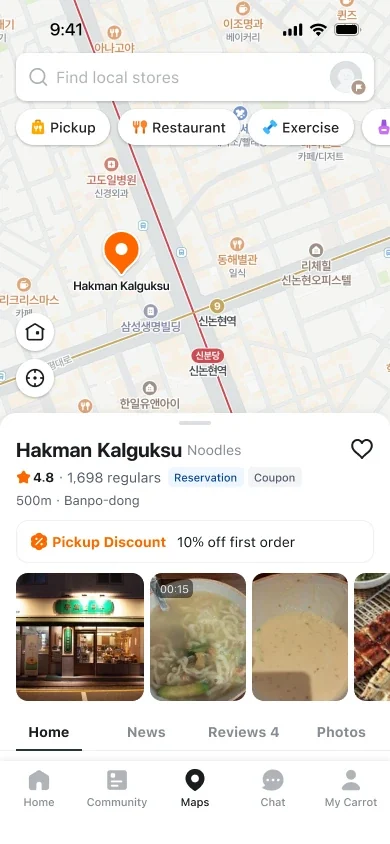
Then pickup discounts.
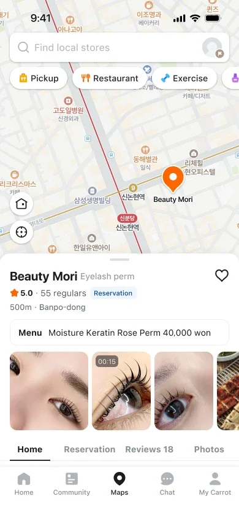
Then the menu. With a price, so people can decide on the spot.
Nudges into the business page. A dot on News and a review count on Reviews give people a reason to open the page, and it opens on the tab they tapped.
The preview. News has a dot. Reviews shows a count.
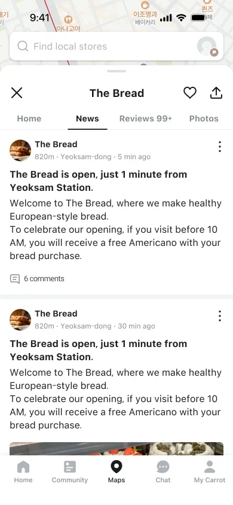
Tap News. The page opens on the latest post.
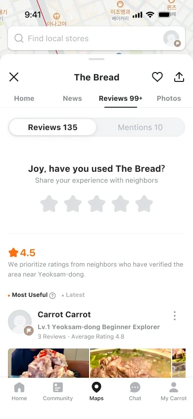
Tap Reviews. The page opens on reviews, with a prompt to add one.
When there’s little to show. Instead of an empty space, the preview asks neighbours to fill the gap.
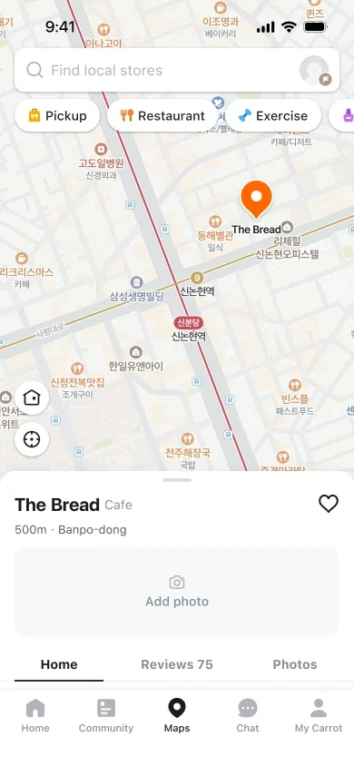
No photos yet. The preview asks for one.
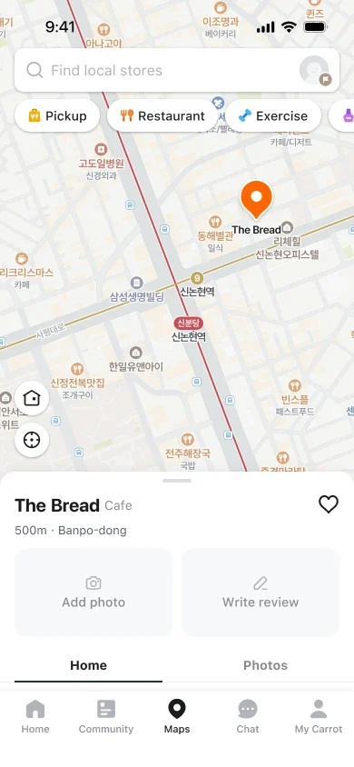
No photos or reviews. It asks for both.
In search results. Results got the same treatment: benefits and photos up front, a neighbour’s review, and for services, a button to request a quote.
Photo-led. The owner’s description, tags, then photos.
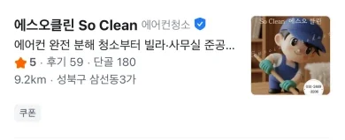
Default. One thumbnail beside the description.
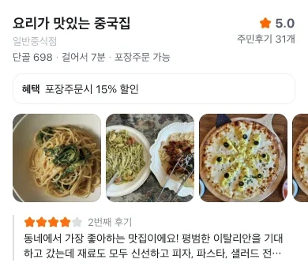
Benefit and review. A 15% pickup discount, photos, and a neighbour’s review.
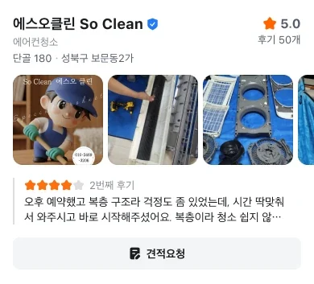
With an action. For services, a button to request a quote.
Search results from the Korean app.
Results
Preview to action: 1.3% → 1.5% (+8.77%). Preview clicks +3.71%, business page views +4.67%, preview click rate +1.07%.
Preview to action: 10.0% → 10.9% (+8.74%). Preview clicks +3.82%, business page views +5.08%, preview click rate +2.76%.
Action is a conversion action on the business page, such as tapping Call or Chat.
Getting people to set their home
Goal: get 80% of people shown an estimated location to register their home.
The tab’s strategy was to centre exploration on where people live. People without a registered home landed on an estimated location instead, but despite earlier attempts, only 0.7% of users had registered one.
Showing someone a guess of where they live can feel sensitive. So in a three-week project with one frontend engineer, I led a test of three ways to show it, from proposal and design to analysis.
A precise pin
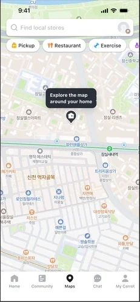
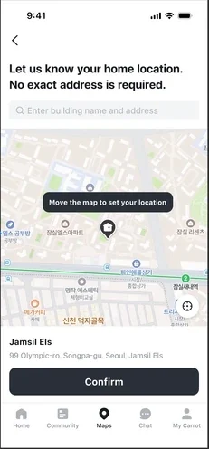
A soft boundary
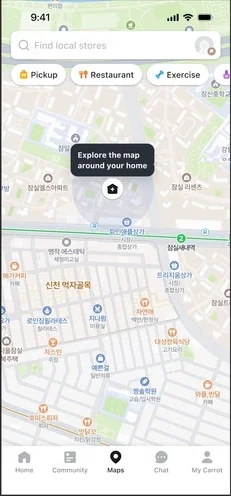
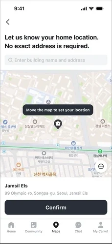
A small game
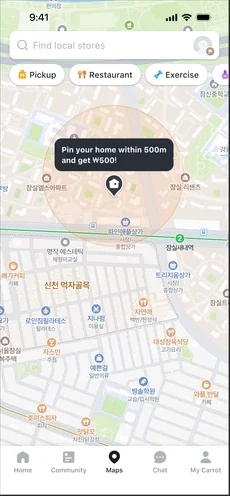
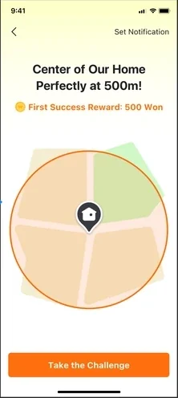
| Group | Opened home setup | Registered a home | vs control | Opened → registered | Shown → registered |
|---|---|---|---|---|---|
| Control | 12,511 | 7,787 | – | 62.24% | 1.39% |
| Treatment 1 · precise pin | 17,228 | 10,579 | +26.39% | 61.41% | 1.89% |
| Treatment 2 · soft boundary | 17,801 | 10,891 | +28.50% | 61.18% | 1.95% |
| Treatment 3 · small game | 23,105 | 15,821 | +50.78% | 68.47% | 2.83% |
August 11 to 24, 2025. About 558,000 people were shown the estimated home in each group, including a control group with no change.
All three lifted registrations by more than 25%. The game-like version did best, and we shipped it. The surprise: people didn’t push back much, even when their estimated home was shown with a precise pin.
Where the tab landed
The combined result of the work above, as of January 2026.
What I learned
Naming what Karrot Map was for, and what it wasn’t, made every later choice easier to judge.
Map use grew more than 100 times, but interviews showed people still didn’t know what the map was for.
It turned a clear win in Experiment 1 into a better decision in Experiment 2.
People minded an estimated home far less than we expected. Only a test could have told us that.